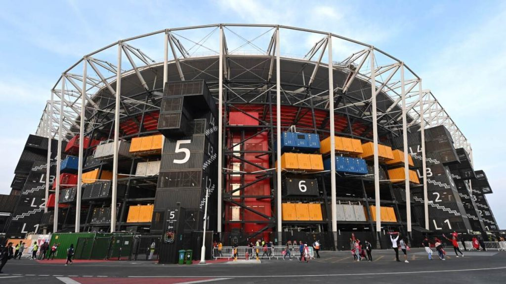
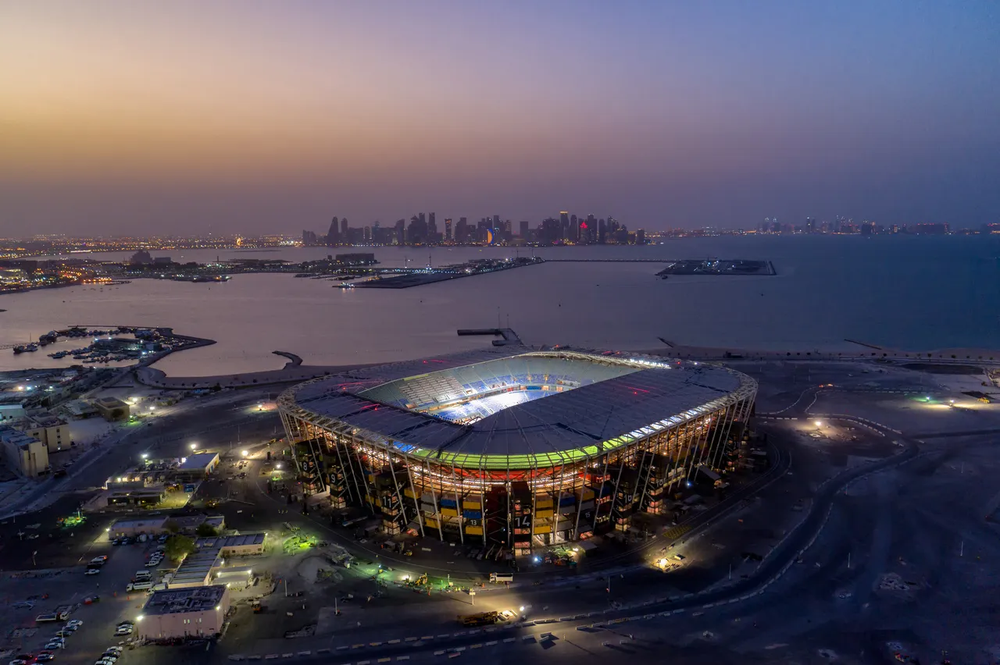
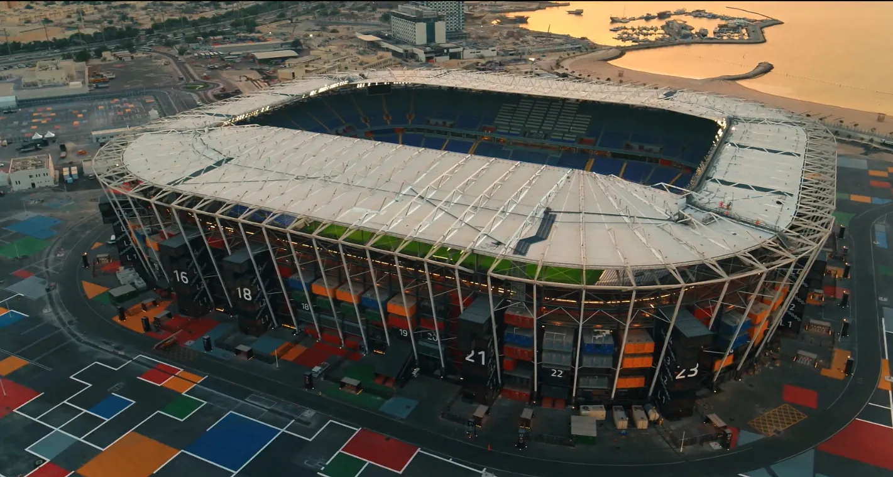
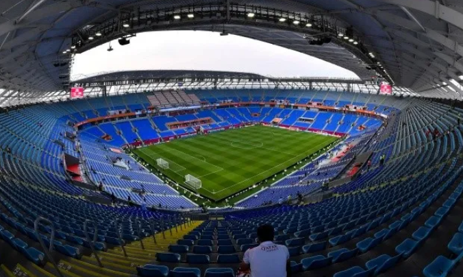
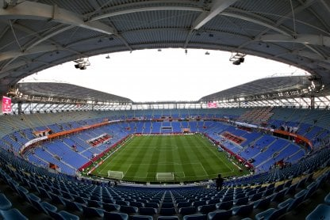

El Estadio efímero 974, construido en las costas del golfo, no solo ofrece unas impresionantes vistas de West Bay, sino también un diseño intrigante. Construido a partir de contenedores de carga, se ha utilizado menos material que para los estadios tradicionales, y con ello se ha dado un ejemplo de lo que se puede hacer en el futuro.
El Estadio 974 albergará siete partidos durante la Copa Mundial de Futbol de 2022:
22 de noviembre de 2022 19:00 (México vs Polonia Grupo C)
24 de noviembre de 2022 19:00 (Portugal vs Ghana Grupo H)
28 de noviembre de 2022 19:00 (Brasil vs Suiza Grupo G)
30 de noviembre de 2022 22:00 (Polonia vs Argentina Grupo C)
2 de diciembre de 2022 22:00 (Serbia vs Suiza Grupo G)
5 de diciembre de 2022 22:00 (Ganador grupo G Segundo lugar grupo H Octavos de final)